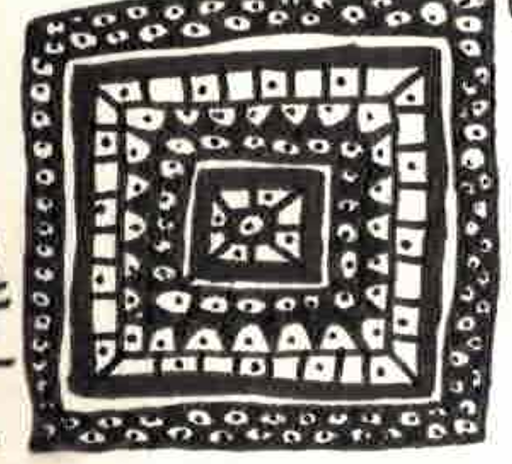
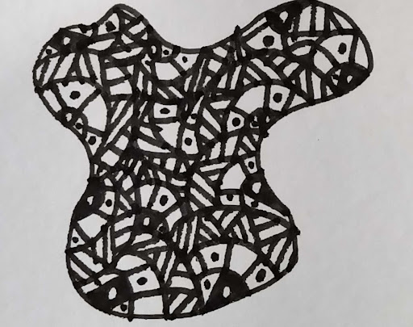
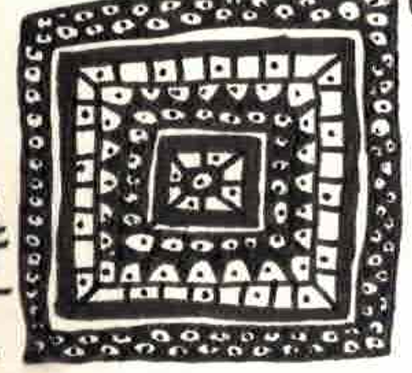
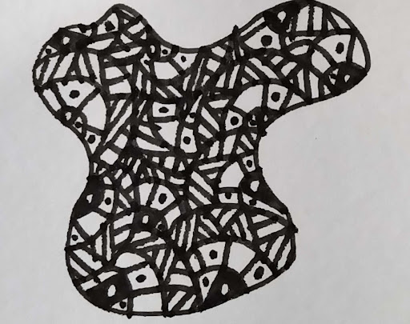

How It Works
The Engima Machine will first begin by selecting an initial starting pattern. Once this starting pattern has been selected, the machine will begin generate random numbers that represent what is to be drawn within the empty spaces created by the inital pattern. Each starting pattern has its own unique system that details how many times the pattern should be repeated and how the initial pattern should be drawn. For more instructions on how to read the code for each pattern, visit the Instructions page for each pattern.
Purpose
This system of code generation is intended to serve as an aid to artists looking to draw in zentagle-like style either as inspiration or to overcome artists block by randomly generating designs and patterns in that style to later incorporate into art pieces. While this lacks the ability to be a completely design new art pieces, each pattern can be used in a piece to create one large art piece from the patterns provided by The Enigma Machine.
Example Pieces:
 


